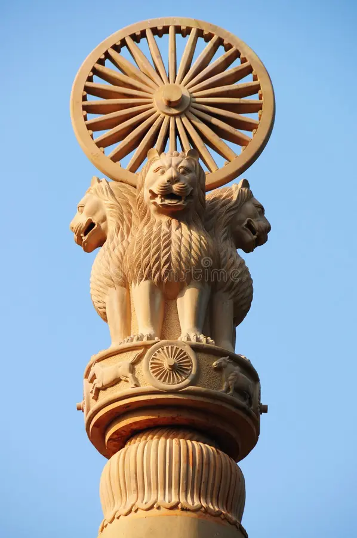
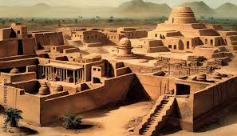
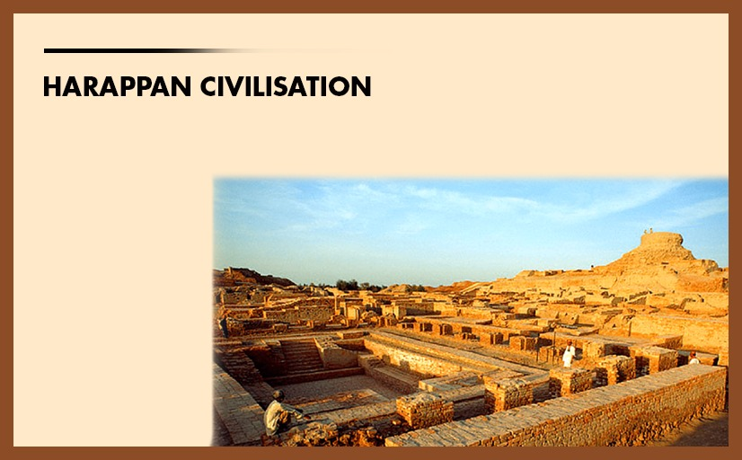
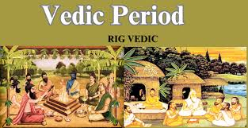
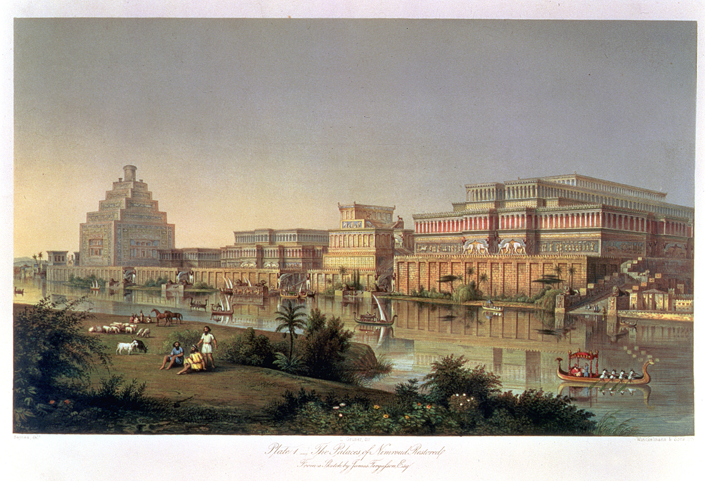

Welcome To The About Page
-- Introduction to India's Heritage --
India's heritage is a tapestry woven with the threads of ancient civilizations, diverse cultures, and timeless
traditions. With a history that spans over 5,000 years, India is home to some of the world's oldest architectural
marvels, religious monuments, and artistic treasures. From the iconic temples of Khajuraho and the grandeur of the
sun temple to the ancient Buddhist stupas of Sanchi and the rock-cut caves of Ajanta and Ellora, each monument tells
a story of India's glorious past.
India's heritage is not limited to its monuments alone; it extends to its rich traditions, festivals, music, dance
forms, and languages, which have evolved and flourished over centuries. Influenced by a variety of rulers and
dynasties : Hindus, Mughals, British, and others—India's diverse history has contributed to its unique blend of
architectural styles, religious practices, and cultural norms.
The beauty of India's heritage lies in its diversity. Every region, from the majestic forts of Rajasthan to the
serene backwaters of Kerala, offers a different glimpse into the nation’s soul. This incredible cultural legacy,
passed down through generations, is a testament to the country's enduring spirit and its reverence for the past,
making India a living museum of human history.
--Historical Significance of India's Heritage--
India’s heritage holds immense historical significance as it reflects the evolution of one of the world’s oldest
and most enduring civilizations. From the Indus Valley Civilization, which laid the foundations of urban life
over 4,000 years ago, to the flourishing of great empires like the Maurya, Gupta, and Mughal dynasties, India's
historical landmarks offer deep insights into its socio-political, economic, and cultural development.
Monuments like the ancient city of Varanasi, the grand Ashoka Pillars, and the Buddhist stupas at Sanchi
showcase India’s role as a center of spiritual and intellectual growth. The intricate rock-cut temples of Ajanta
and Ellora, and the architectural splendor of the Taj Mahal, reflect the blend of indigenous and foreign
influences that have shaped Indian history.
Throughout its past, India has been a hub for trade, culture, and ideas, influencing regions across Asia, the
Middle East, and beyond. The historical significance of its heritage is not just in its monuments, but in the
ideas of tolerance, unity, and diversity, which continue to influence modern India. These ancient sites and
traditions connect the present to the past, reminding future generations of India’s remarkable journey through
time.
" Cultural Diversity of India "
India is renowned for its extraordinary cultural diversity, which is a reflection of the country’s vast history,
geography, and multi-ethnic society. The cultural fabric of India is woven with numerous languages, religions,
customs, and traditions that coexist harmoniously, making it one of the most diverse nations in the world.
Languages: India is home to 22 official languages and over 1,600 dialects, with Hindi being the most widely
spoken. Each language carries its own literature, folklore, and oral traditions, contributing to the linguistic
richness of the country.
Religions: India is the birthplace of major world religions like Hinduism, Buddhism, Jainism, and Sikhism, and
is also home to significant populations of Muslims, Christians, Parsis, and Jews. This religious diversity is
reflected in the numerous festivals celebrated across the country, including Diwali, Eid, Christmas, Guru Nanak
Jayanti, and more.
Traditions and Customs: Every region of India has its own unique traditions, from the vibrant dances of
Bharatanatyam in the south and Kathak in the north to the colorful festivals of Holi and Onam. Each state has
its own distinct cuisine, attire, and art forms, such as the handwoven textiles of Gujarat and the temple
architecture of Tamil Nadu.
Art and Music: India’s art forms, such as miniature paintings, classical music (Hindustani and Carnatic), and
folk art like Warli and Madhubani, showcase the country’s creativity. The diversity in music ranges from
classical ragas to contemporary Bollywood songs, with each region contributing its unique style.
Unity in Diversity: Despite these differences, India is unified by a sense of shared history and values. The
country’s motto, "Unity in Diversity," reflects its ability to embrace and celebrate a wide range of cultures,
while maintaining a collective national identity. Indian culture promotes tolerance and inclusivity, which is
why people from different communities live together in mutual respect.
India’s cultural diversity is not just a characteristic; it is a source of strength that fosters innovation,
creativity, and resilience. It is a living testament to the country’s ability to harmonize a myriad of cultural
influences into one cohesive society.
"The purpose of the Historical Heritage of India website is to":
Educate and Inform: Provide comprehensive information about India's rich and diverse historical heritage,
including its ancient monuments, temples, forts, palaces, and cultural landmarks. The site serves as an
educational platform for students, history enthusiasts, and the general public.
Promote Cultural Awareness: Raise awareness about India's historical and cultural diversity. It aims to promote
understanding and appreciation of the various cultural, religious, and architectural marvels that have shaped
the country's identity over millennia.
Preserve History: Serve as a digital archive for India's historical sites and monuments, contributing to the
preservation of knowledge about these heritage sites for future generations. Highlight the need for preservation
and conservation of these important landmarks.
Encourage Tourism: Act as a guide for tourists, both domestic and international, who wish to explore India's
historical treasures. The website can provide detailed information about famous and lesser-known heritage sites,
travel tips, and other resources to enhance the visitor experience.
Promote National Pride: Celebrate India's rich history and achievements through its heritage, fostering a sense
of pride among Indians about their shared past. This helps in building a deeper connection with the nation's
cultural roots.
Highlight UNESCO World Heritage Sites: Provide detailed insights into India's numerous UNESCO World Heritage
Sites, explaining their significance and the stories behind these global treasures.
Showcase Cultural Diversity: Reflect the country's cultural diversity by offering information about different
regions, traditions, and communities that contribute to India's unique historical and cultural landscape.
"Explore India's Rich History"
The Call to Action (CTA) for the Historical Heritage of India website could focus on engaging visitors in
meaningful ways, encouraging them to explore, share, and participate in preserving India's rich heritage. Here
are some CTAs that can be used on the site:
Invite visitors to dive into various sections of the website and learn about India’s monuments, temples, forts,
and cultural treasures.
Button: Explore Now
"Discover UNESCO World Heritage Sites"
Encourage users to explore India’s globally recognized heritage sites.
Button: View Sites
"Plan Your Journey Through History"
Inspire tourists to visit the heritage sites in person with travel guides and tips.
Button: Start Your Adventure
"Preserve Our Heritage"
Urge visitors to support preservation efforts by contributing to campaigns or spreading awareness about the need
to protect these historical landmarks.
Button: Join the Cause
"Share Your Experience"
Invite users to share their stories, photos, and experiences from visiting India's heritage sites.
Button: Share Your Story
"Learn More About Our Culture"
Encourage visitors to delve deeper into India’s cultural diversity and historical significance.
Button: Discover Culture
"Support India's Historical Preservation"
Call for donations or volunteer support for heritage preservation and restoration projects.
Button: Donate Now / Volunteer
"Stay Connected"
Encourage users to subscribe to newsletters or follow social media for updates on heritage news, events, and
site features.
Button: Subscribe for Updates

Ashoka Stambh (Ashoka Pillar) -
The Ashoka Stambh, also known as the Ashoka Pillar, is one of the most important symbols of India's rich historical and cultural heritage. It was erected by Emperor Ashoka, one of India’s greatest rulers, who reigned over the Indian subcontinent during the Maurya Dynasty in the 3rd century BCE. The Ashoka Stambh stands as a symbol of peace, tolerance, and prosperity, reflecting the values that Ashoka adopted after his conversion to Buddhism following the Kalinga War.
One of the most famous of these pillars is the Lion Capital of Ashoka, located in Sarnath, Uttar Pradesh, which was adopted as the national emblem of India in 1950. The wheel, or Dharma Chakra, from the pillar’s base is also featured at the center of the Indian national flag.
Historical Significance
Emperor Ashoka's Rule:
Ashoka initially expanded his empire through military conquests but underwent a profound transformation after witnessing the devastation caused by the Kalinga War. He embraced Buddhism and adopted a philosophy of non-violence (Ahimsa) and compassion towards all living beings.
As part of his efforts to spread the teachings of Buddha, Ashoka had these pillars, inscribed with edicts and Buddhist principles, erected throughout his empire. They served as moral and administrative guides for his subjects.
Edicts on the Pillars:
The Ashoka Edicts are inscriptions found on several pillars, promoting virtues like truthfulness, kindness, and religious tolerance. The edicts are written in Prakrit, Greek, and Aramaic, depending on the region in which they were erected.
These inscriptions detail Ashoka’s Dhamma (moral law), emphasizing Buddhist ethical teachings like non-violence, compassion, and respect for all life forms.
Buddhist Symbolism:
The Ashoka Pillars are heavily linked to Buddhism and serve as a reminder of Ashoka's role in the spread of Buddhist teachings both within India and abroad to regions like Sri Lanka, Southeast Asia, and the Hellenistic West.
Many of these pillars were placed near important Buddhist sites, including Sarnath, where Buddha delivered his first sermon, and Lumbini, Buddha’s birthplace.
Architectural Features
Material:
The Ashoka Pillars were primarily made from polished sandstone, which was skillfully crafted to achieve a fine finish. Most of the pillars were monolithic, meaning they were carved from a single block of stone, demonstrating remarkable craftsmanship for the time.
Lion Capital of Ashoka:
The Lion Capital of the Sarnath pillar is perhaps the most famous among all Ashoka Pillars. It features four Asiatic lions standing back to back, symbolizing power, courage, pride, and confidence.
The base of the capital includes an elephant, horse, bull, and lion, each representing the four cardinal directions and elements of Buddhism’s universal reach.
Below these figures is a Dharma Chakra (Wheel of Law) with 24 spokes, symbolizing righteousness and the eternal cycle of time.
Height and Structure:
The Ashoka Pillars vary in height, but most stand around 40 to 50 feet (12 to 15 meters) tall. The cylindrical shafts taper slightly as they ascend, with capitals featuring animals, such as lions, elephants, or bulls, perched atop.
Many of these pillars were topped with a wheel, or Dharma Chakra, though most of these wheels are now missing from the surviving structures.
Spread of Pillars:
There were about 30 Ashoka Pillars originally erected throughout the empire, from present-day India to Nepal and Pakistan. Unfortunately, many have been damaged or lost over time due to natural erosion or deliberate destruction.
Symbolism and Importance
National Emblem:
The Lion Capital of Ashoka was adopted as the official National Emblem of India on January 26, 1950. It symbolizes India's commitment to peace and tolerance, as well as the nation’s deep cultural roots in Buddhism.
The Dharma Chakra from the Ashoka Stambh appears on the Indian national flag, symbolizing progress and motion toward justice and truth.
Legacy of Ashoka:
Ashoka is remembered as one of the few conquerors in world history who renounced warfare and sought to spread the values of compassion, ethical governance, and religious tolerance.
His legacy, immortalized through these pillars, has had a lasting impact on Indian history, Buddhism, and the broader world.
Location of Important Ashoka Pillars
Sarnath (Uttar Pradesh):
The Lion Capital of Ashoka is found here and is one of the most iconic Ashoka Stambhs. It was erected at the site where Buddha gave his first sermon, and the pillar symbolized the spread of Buddhist teachings.
Vaishali (Bihar):
This pillar is associated with Buddha’s last sermon and is topped with a single lion.
Lumbini (Nepal):
The Ashoka Pillar here marks Buddha's birthplace and is considered a highly sacred spot for Buddhists worldwide.
Delhi:
One of Ashoka's pillars stands in Feroz Shah Kotla in Delhi, moved from its original location by Feroz Shah Tughlaq in the 14th century.
Lauriya Nandangarh (Bihar):
This Ashoka Pillar is one of the best-preserved, with its inscriptions still clearly visible.
Conclusion-
The Ashoka Stambh stands as an enduring symbol of India's ancient heritage, spiritual diversity, and its profound commitment to values like tolerance and non-violence. These pillars reflect the wisdom of Ashoka, who used them to spread the Dhamma, or righteous conduct, and to inspire a moral code for his people. The legacy of these pillars continues to be celebrated in modern India, with the Lion Capital serving as the national emblem and a reminder of the country’s rich historical past.

Indus Valley Civilization
The Indus Valley Civilization (IVC), also known as the Harappan Civilization, was one of the world’s earliest and most advanced urban cultures, flourishing around 3300 BCE to 1300 BCE in the northwestern regions of South Asia, primarily in modern-day Pakistan and northwest India. It is named after the Indus River, around which the civilization developed. It is notable for its advanced urban planning, architecture, and social organization.
Key Highlights of the Indus Valley Civilization
Timeline:
Early Harappan Phase: 3300–2600 BCE
Mature Harappan Phase: 2600–1900 BCE
Late Harappan Phase: 1900–1300 BCE
Geographical Extent:
The civilization covered a vast area of over 1.25 million square kilometers, including parts of modern-day Pakistan, India, and Afghanistan.
Important urban centers were situated along the Indus River and its tributaries, and spread as far as the Ganges-Yamuna Doab.
Major Cities of the Indus Valley Civilization
Harappa:
One of the first cities discovered (in modern-day Punjab, Pakistan), Harappa gave the civilization its name.
It was a well-planned city with a grid layout, large granaries, residential areas, and complex water management systems.
Mohenjo-Daro:
Located in present-day Sindh, Pakistan, Mohenjo-Daro is one of the largest and most well-preserved cities.
The city’s most famous feature is the Great Bath, a large, watertight pool that was likely used for religious or ritualistic purposes.
Mohenjo-Daro also had an advanced drainage system, public wells, and organized residential blocks.
Dholavira:
Located in present-day Gujarat, India, Dholavira is known for its sophisticated urban planning and large water reservoirs.
Dholavira had clearly demarcated citadels, middle towns, and lower towns, and is famous for its water conservation systems.
Lothal:
Also in Gujarat, Lothal is notable for being a major port city of the Indus Valley Civilization.
It had a sophisticated dockyard and evidence of extensive trade networks.
Rakhigarhi:
Located in Haryana, India, Rakhigarhi is one of the largest Indus Valley sites discovered to date and is still under excavation.
Urban Planning and Architecture
Grid-Based City Planning:
The cities of the Indus Valley were planned on a grid system with streets cutting at right angles.
Cities were divided into upper and lower sections (often referred to as the citadel and lower town), with the citadel usually housing public buildings and the lower town for residential purposes.
Advanced Drainage and Sanitation:
One of the hallmarks of the IVC was its sophisticated drainage system. Nearly every house was connected to a central drainage system, which was covered and maintained regularly.
Public baths, wells, and sanitation facilities were common.
Use of Standardized Bricks:
The IVC used standardized, uniformly sized mud bricks for construction, ensuring the structural integrity and uniformity of buildings.
Water Management:
In cities like Dholavira, large reservoirs were built for water storage and conservation, showcasing advanced knowledge of hydraulic engineering.
Economy
Agriculture:
The Indus Valley Civilization’s economy was primarily based on agriculture. They cultivated wheat, barley, peas, sesame, and cotton (one of the earliest instances of cotton cultivation).
The Indus people practiced advanced irrigation techniques and had knowledge of seasonal cropping.
Trade:
The IVC had extensive trade networks with distant regions, including Mesopotamia, Persia, and Central Asia.
Lothal was an important maritime center, facilitating trade in precious stones, metals, beads, textiles, and pottery.
They imported materials like lapis lazuli, turquoise, and tin from distant regions.
Crafts and Industry:
The Indus Valley people were skilled artisans, producing pottery, beads, jewelry, tools, and seals.
The Harappan seals are among the most well-known artifacts, often depicting animals like unicorns and inscriptions in a script that remains undeciphered.
Society and Culture
Social Organization:
The cities reflect a highly organized society with evidence of class differentiation. Large, well-constructed homes likely belonged to elites, while smaller houses were inhabited by commoners.
There seems to have been some central authority, as suggested by the uniformity of city planning and construction.
Religion:
While not much is known about the precise religious beliefs of the IVC, some symbols and artifacts provide clues:
Many terracotta figurines suggest a focus on fertility and nature worship. A seal depicting a figure with a headdress surrounded by animals, sometimes referred to as a proto-Shiva or Pashupati, suggests the possibility of early forms of Hinduism or nature cults.
Tree worship and reverence for water, as evidenced by the Great Bath at Mohenjo-Daro, were likely part of their religious practices.
Writing System:
The Harappan script remains undeciphered to this day, comprising around 400 symbols found on seals, pottery, and other artifacts.
It is unclear whether the script represents a full language or a set of symbols used for trade and administrative purposes.
Art and Sculpture:
The art of the Indus Valley Civilization was sophisticated, with examples of terracotta figurines, bronze sculptures, and intricate jewelry.
One of the most famous artifacts is the Dancing Girl of Mohenjo-Daro, a bronze statuette representing a young woman.
Decline of the Indus Valley Civilization
Environmental Factors:
One of the major theories for the decline of the IVC is climate change and environmental degradation. Changes in the course of the Indus River and the drying up of rivers like the Ghaggar-Hakra (possibly the ancient Sarasvati River) may have caused agricultural difficulties.
Trade Decline:
Trade networks may have been disrupted by changes in neighboring regions, such as the rise of new civilizations like the Mesopotamians and Persians, leading to economic decline.
Aryan Invasion Theory (Debated):
Earlier scholars proposed the Aryan Invasion Theory, suggesting that the arrival of Indo-Aryans led to the destruction of the Indus cities. However, this theory has been largely discredited, and it is now believed that the Indus Valley Civilization gradually declined due to multiple factors.
Transformation into Later Cultures:
Some aspects of the Indus Valley Civilization, especially its agricultural practices and religious symbolism, likely persisted in later cultures in the Indian subcontinent, such as the Vedic Civilization.
Legacy and Importance
The Indus Valley Civilization is considered one of the cradles of civilization, along with Mesopotamia, Egypt, and China.
Its contributions to urban planning, water management, trade, and craftsmanship were advanced for its time and influenced later cultures in the region.
The seals, artifacts, and architecture left behind by the IVC offer valuable insights into early human societies and their development.
Conclusion-
The Indus Valley Civilization stands as a testament to human ingenuity in the ancient world, with its well-planned cities, sophisticated engineering, and complex social structure. Despite the mysteries that still surround it, particularly its undeciphered script, the IVC remains a cornerstone in the study of early human history, shedding light on the beginnings of urban life and the interactions between ancient civilizations.

Harappan Civilization
The Harappan Civilization, also known as the Indus Valley Civilization (IVC), was one of the earliest urban cultures in the world, flourishing around 3300 BCE to 1300 BCE. It was centered around the Indus River and its surrounding regions, primarily in what is now Pakistan and northwestern India. The civilization is named after Harappa, one of its major cities, which was among the first sites to be excavated in the early 20th century.
Key Facts about the Harappan Civilization
Time Period:
Early Harappan Phase: 3300–2600 BCE
Mature Harappan Phase: 2600–1900 BCE
Late Harappan Phase: 1900–1300 BCE
Geographical Extent:
The Harappan civilization covered an area of over 1.25 million square kilometers, making it larger than ancient Mesopotamia and Egypt combined. It extended from northeast Afghanistan to Pakistan and northwest India, including regions of the Indus River basin, Ghaggar-Hakra River basin, and parts of modern Gujarat, Rajasthan, and Haryana.
Major Cities:
Harappa (Punjab, Pakistan)
Mohenjo-Daro (Sindh, Pakistan)
Dholavira (Gujarat, India)
Rakhigarhi (Haryana, India)
Lothal (Gujarat, India)
Kalibangan (Rajasthan, India)
Banawali (Haryana, India)
Key Features of the Harappan Civilization
Urban Planning:
The cities of the Harappan civilization were remarkable for their advanced urban planning. The cities were laid out in a grid pattern, with streets running at right angles.
The cities had a citadel (fortified upper section) and a lower town. The citadel housed important buildings, while the lower town was residential and commercial.
Standardized brick sizes were used in construction, indicating a high degree of planning and central authority.
Advanced Drainage System:
One of the most impressive features of the Harappan cities was their drainage system. Almost every house had access to covered drains, which were connected to a larger network of underground drains.
Public baths and wells were also common, showing a concern for public sanitation and hygiene.
Water Management:
In cities like Dholavira, there were elaborate systems for storing water, including reservoirs and channels. This suggests that the Harappans had a deep understanding of water conservation and management, which was essential in the semi-arid regions they inhabited.
Economy:
The Harappan economy was based on agriculture, trade, and craft production.
Agriculture: They cultivated crops such as wheat, barley, peas, sesame, mustard, and cotton (possibly one of the earliest examples of cotton cultivation).
Trade: The Harappans had extensive trade links with distant regions, including Mesopotamia, Persia, and Central Asia. Evidence suggests that they traded in goods like beads, pottery, jewelry, and possibly textiles.
Lothal in Gujarat is believed to have been a significant port city, indicating the importance of maritime trade in Harappan commerce.
Art and Craftsmanship:
The Harappans were skilled in various crafts, such as pottery, bead-making, metalworking, and sealing.
Harappan seals: These small, carved stones used to stamp goods or documents are one of the most iconic artifacts of the civilization. They often depict animals (like bulls, elephants, and unicorns) and a script that remains undeciphered.
They also crafted intricate jewelry, metal tools, and terracotta figurines.
Architecture:
The Harappans built multi-story houses with courtyards, kitchens, and bathrooms.
The use of baked bricks in construction and the existence of well-planned residential and public buildings reflect a sophisticated urban culture.
The Great Bath of Mohenjo-Daro is one of the most famous architectural structures, likely used for ritual bathing.
Writing System:
The Harappan script is found on seals, pottery, and other artifacts. It consists of around 400 symbols, but it has not been deciphered yet. It is unclear whether the symbols represent a full language or a set of symbols for trade or administrative purposes.
Religion and Beliefs:
While there is no clear evidence of temples or large religious structures, the Harappans likely had religious practices centered around nature and fertility.
Figurines of women (possibly mother goddesses) and animals (like the bull, which may have had religious significance) have been found.
A seal depicting a figure seated in a yogic posture, surrounded by animals, has been interpreted by some scholars as an early representation of Shiva or Pashupati (the Lord of Animals).
Social Organization:
The society of the Harappans appears to have been egalitarian compared to other ancient civilizations. There are no clear signs of kings or a ruling elite, and the homes of the wealthy were not significantly more opulent than those of commoners.
The division of labor and specialization in various crafts indicate that Harappan society was highly organized and collaborative.
Decline of the Harappan Civilization
The reasons for the decline of the Harappan Civilization are still debated by scholars. Some of the proposed factors include:
Environmental Changes:
Changes in the course of the Indus River or the drying up of the Ghaggar-Hakra River (believed by some to be the Sarasvati River) could have disrupted agriculture and led to the decline of urban centers.
Evidence of flooding in cities like Mohenjo-Daro suggests that environmental instability played a role in the civilization's decline.
Overuse of Resources:
Intensive farming, deforestation, and overgrazing may have led to soil degradation and a decline in agricultural productivity, contributing to the collapse of cities.
Trade Decline:
Harappa’s trade links with Mesopotamia may have weakened due to the decline of the Mesopotamian civilization itself around the same time, reducing access to essential resources.
Internal Struggles or Social Changes:
It is possible that internal social or political changes, such as conflicts or shifts in power, contributed to the collapse of urban centers.
Arrival of Indo-Aryans (Debated):
The Aryan Invasion Theory suggested that the arrival of Indo-Aryans from Central Asia led to the downfall of the Harappan cities. However, this theory has been widely debated and largely discredited. Most scholars now believe that the decline was gradual and caused by a combination of factors.
Legacy and Importance
The Harappan Civilization remains one of the most important archaeological discoveries of the 20th century. Its advanced urban planning, architecture, and social organization were unparalleled for its time.
The Harappans’ knowledge of water management, drainage systems, and city planning influenced later urban cultures in South Asia.
The civilization’s undeciphered script and mysterious decline continue to fascinate archaeologists and historians, making it one of the greatest mysteries in ancient history.
The Harappan Civilization laid the foundations for the later development of South Asian culture and society, especially in terms of its agricultural practices, trade networks, and possible religious ideas that may have influenced early Vedic culture.
Conclusion
The Harappan Civilization was a remarkable early urban culture, defined by its sophisticated city planning, advanced technology, and far-reaching trade networks. Despite its mysterious decline, it left behind a legacy that shaped the cultural and historical trajectory of the Indian subcontinent. The civilization’s achievements in urban development, craftsmanship, and trade were impressive for their time, and ongoing excavations continue to reveal new insights into this ancient and enigmatic society.

Vedik Period-
The Vedic Period (c. 1500 BCE - 500 BCE) marks a crucial era in ancient Indian history, following the decline of the Indus Valley Civilization and the migration of Indo-Aryans into the Indian subcontinent. This era is named after the Vedas, which are the oldest known scriptures of Hinduism. These texts provide insight into the religious, social, and political aspects of the time, shaping Indian culture and society.
Key Aspects of the Vedic Period
Timeline:
Early Vedic Period: c. 1500 BCE – 1000 BCE
Later Vedic Period: c. 1000 BCE – 500 BCE
The Vedic Period is broadly divided into the Early Vedic (Rigvedic) and Later Vedic phases based on differences in the lifestyle, religious beliefs, and social structures of the time.
1. Literature: The Vedas
The primary sources of knowledge about this period come from the Vedas, which are considered the most sacred texts in Hinduism. The four Vedas are:
Rigveda: The oldest and most important Veda, consisting of hymns dedicated to various deities.
Yajurveda: Contains sacrificial formulas used in rituals.
Samaveda: Composed of melodies and chants to be sung during sacrifices.
Atharvaveda: Includes hymns, spells, and charms dealing with daily life and spiritual practices.
The Vedas were transmitted orally for generations before being written down, and they are composed in Sanskrit, the language of the Aryans.
2. Geographical Spread
Early Vedic Period: The Indo-Aryans initially settled in the Sapta Sindhu (Land of Seven Rivers) region, which includes the Indus River and its tributaries (present-day Pakistan and northwest India).
Later Vedic Period: The Aryans expanded eastward toward the Gangetic plains, marking the spread of Vedic culture into regions like modern Uttar Pradesh and Bihar.
3. Society
The Vedic society underwent significant transformations between the early and later phases.
Early Vedic Society:
The society was predominantly pastoral and tribal. Cattle were the most important asset, serving as the basis of wealth.
Social Structure: It was relatively egalitarian, with no rigid caste system. Society was divided into three classes (varnas):
Brahmins (priests),
Kshatriyas (warriors),
Vaishyas (commoners, mainly herders and farmers).
Families were patriarchal, but women enjoyed some degree of freedom and respect. They could attend assemblies and participate in religious rituals.
Political Organization: Society was organized in tribes (called janas), and tribal chiefs (rajan) ruled with the help of assemblies like Sabha (council of elders) and Samiti (general assembly).
Later Vedic Society:
The society became more sedentary and agricultural, with a shift from a pastoral economy to settled farming.
The caste system (Varna system) became more rigid and hierarchical, with the emergence of the Shudras (the fourth class) as laborers and artisans.
The roles of Brahmins (priests) and Kshatriyas (warriors) became more entrenched, with Brahmins gaining more control over religious and social life.
Women’s Status: The status of women declined, with greater restrictions on their participation in public life and religious ceremonies. The practice of sati (the immolation of widows) is thought to have its roots in this period.
4. Economy
Early Vedic Economy: The economy was largely pastoral, with cattle serving as the main form of wealth. The Aryans practiced some agriculture, growing barley and wheat, but animal husbandry remained dominant.
Later Vedic Economy: As the Aryans moved eastward into the fertile Gangetic plains, agriculture became the primary occupation. They cultivated rice (known as vrihi) and wheat, and the use of iron tools (such as plows and sickles) helped in the expansion of agriculture.
Trade and Commerce: Barter was the primary mode of exchange, though cowry shells and nishka (gold coins) began to be used as a medium of exchange toward the end of this period.
5. Religion and Beliefs
Early Vedic Religion:
The religion was polytheistic, with a focus on nature worship. Key deities included:
Indra: The god of thunder and rain, the most important deity in the Rigveda.
Agni: The god of fire and the intermediary between gods and humans.
Varuna: The god of cosmic order (rita).
Surya: The Sun god.
Soma: A plant god, associated with a ritual drink consumed during sacrifices.
Rituals and sacrifices were a central part of worship, conducted by the Brahmins. Offerings of milk, grain, and animals were made to please the gods and ensure prosperity.
Later Vedic Religion:
The focus shifted from nature worship to more complex rituals and sacrifices, with greater emphasis on priestly rituals performed by the Brahmins.
New deities like Vishnu and Rudra (an early form of Shiva) gained prominence.
The concept of karma (action) and reincarnation began to emerge, laying the foundation for later Hindu philosophy.
The performance of yajnas (sacrifices) became more elaborate, reflecting the increasing power of the Brahmins in society.
6. Political Organization
Early Vedic Period: The political structure was based on tribes (janas), each led by a rajan (tribal chief or king). The king ruled with the advice of the Sabha (council of elders) and the Samiti (general assembly of the tribe). The king was not an absolute ruler and could be replaced if the tribe found him unfit.
Later Vedic Period: The tribal system evolved into a more monarchical and centralized system, with kingship becoming hereditary. The role of the Brahmins as religious advisors to kings grew in importance, and large kingdoms (Mahajanapadas) started to form by the end of this period. The king's authority became more absolute, and rituals like Rajasuya (royal consecration) and Ashvamedha (horse sacrifice) were conducted to legitimize the king's power.
7. Philosophy and Intellectual Developments
The Vedic period saw the composition of the Upanishads, which marked the transition from ritualistic practices to more philosophical inquiry.
The Upanishads introduced key concepts like Brahman (the ultimate reality), Atman (the soul), and the idea of moksha (liberation from the cycle of rebirth).
This period laid the foundation for various schools of Indian philosophy, including Vedanta.
8. Education and Learning
Gurukula System: Education during this period was informal and took place in gurukulas (teacher's homes), where students lived and studied under the guidance of a guru (teacher). The education was mostly oral and focused on the Vedas, rituals, grammar, and ethics.
The focus was on preserving and transmitting sacred knowledge, primarily among the Brahmin class.
9. Art and Culture
The Vedic period did not produce much in the way of monumental architecture or visual arts, largely because the society was still largely pastoral and nomadic during the early stages.
However, the rich literary tradition of the Vedas, hymns, and rituals became the foundation for Indian spiritual and cultural life, deeply influencing later Hindu, Buddhist, and Jain traditions.
Conclusion
The Vedic Period was a formative phase in Indian history, characterized by the development of early Hindu religious traditions, the emergence of social stratification, and the transition from a tribal, pastoral society to a more complex agrarian civilization. It laid the cultural, social, and religious foundations for later Indian civilization, influencing the political systems, social norms, and philosophical ideas that would shape Indian history for millennia. The texts and ideas from this period continue to be revered in Hinduism and have a lasting impact on Indian society and culture.

Mohenjo-Daro
Mohenjo-daro, one of the most significant and well-preserved cities of the Indus Valley Civilization, was located in present-day Sindh, Pakistan. It is considered one of the oldest urban settlements in the world, dating back to around 2500 BCE. The site, which means “Mound of the Dead” in Sindhi, was discovered in the 1920s and has since been a key source of information about one of the world's earliest major urban centers.
Key Facts about Mohenjo-daro:
Timeline: Mohenjo-daro was founded around 2600 BCE and flourished until around 1900 BCE, when it went into decline along with the rest of the Indus Valley Civilization.
Location: It was located on the banks of the Indus River, strategically positioned in a fertile floodplain, which was advantageous for agriculture and trade.
Discovery: It was discovered in 1922 by archaeologist R.D. Banerji during excavations led by the Archaeological Survey of India.
1. City Layout and Urban Planning
Grid Pattern: One of the most remarkable aspects of Mohenjo-daro is its advanced urban planning. The city was laid out in a well-organized grid pattern, with streets intersecting at right angles.
Two Main Sections: The city had two major areas:
The Citadel: A raised area that housed important public buildings and was likely used for administrative, religious, or defensive purposes.
The Lower City: Where the majority of the population lived, containing homes, workshops, and markets.
Drainage System: The city boasted an advanced drainage system, with well-built brick-lined sewers running beneath the streets. Almost every house had its own private well, bathroom, and toilet, connected to a centralized drainage system. This reflects a high standard of sanitation and engineering.
2. Architecture
Buildings: The buildings in Mohenjo-daro were primarily constructed from uniform-sized baked bricks, which were highly durable. The city's architecture included residential buildings, large public structures, and possibly religious or administrative complexes.
The Great Bath: One of the most famous structures at Mohenjo-daro is the Great Bath, a large, rectangular pool made from baked bricks, measuring about 12 meters long, 7 meters wide, and 2.4 meters deep. It is believed to have had some religious or ritualistic significance, possibly for water-based purification ceremonies.
Granary: Another notable structure is the Granary, a large storage facility believed to have been used to store surplus grain. Its construction indicates the importance of centralized food distribution and possibly state control of resources.
Assembly Halls: Some larger buildings, referred to as pillared halls, were likely used for public meetings, gatherings, or administrative purposes.
3. Social Life and Housing
Residential Buildings: Homes in Mohenjo-daro varied in size, indicating a society with social hierarchies. Most houses were two stories high, with rooms built around a central courtyard. Larger homes had multiple rooms, while smaller dwellings were simpler, possibly reflecting the wealth of their occupants.
Public Spaces: The presence of large streets, public squares, and open spaces in the city suggests that Mohenjo-daro had a vibrant community life. The streets were wide enough to accommodate carts, and the public squares may have been used for markets or gatherings.
Occupations: The people of Mohenjo-daro were skilled in various trades, such as pottery, bead-making, metallurgy, and weaving. Evidence of workshops and kilns suggests a flourishing craft industry. They traded with distant regions, including Mesopotamia (modern-day Iraq), as indicated by the discovery of various artifacts.
4. Economy
Agriculture: Mohenjo-daro's economy was primarily based on agriculture, with crops such as wheat, barley, dates, and cotton being cultivated in the fertile plains surrounding the city. The city's proximity to the Indus River allowed for efficient irrigation.
Trade: The city had a thriving trade network, both within the Indus Valley and with distant civilizations like Mesopotamia. Archaeological evidence, such as seals and weights, suggests that a standardized system of weights and measures was used in trade.
Seals and Script: Mohenjo-daro is known for its distinctive Indus seals, often depicting animals like the unicorn, elephants, and tigers, as well as a yet undeciphered script. These seals were likely used for commercial transactions or as symbols of authority.
5. Religion
The religious practices of Mohenjo-daro are not fully understood due to the lack of deciphered texts. However, several artifacts and structures give clues to their spiritual life:
Seals with Religious Symbols: Many of the Indus seals discovered at Mohenjo-daro feature religious or mythical symbols, such as the image of a Pashupati-like figure (possibly a precursor to Shiva), surrounded by animals. This figure is often interpreted as a deity connected to fertility or nature.
Figurines: Numerous terracotta figurines have been found, including depictions of Mother Goddess figures, suggesting a fertility cult.
Water Rituals: The Great Bath indicates the importance of water in ritual or religious life, possibly used for purification purposes.
6. Art and Craftsmanship
Bead-making: Mohenjo-daro was famous for its finely crafted beads made from materials like steatite, carnelian, agate, and faience. These beads were used in jewelry and as trade items.
Pottery: The city's artisans produced a variety of pottery, including painted and unpainted items. Pottery found at Mohenjo-daro is typically red or buff-colored, often with geometric or naturalistic designs.
Statues: Notable finds include the famous "Dancing Girl" statue, a small bronze figurine representing a young woman, and a priest-king figure, depicting a bearded male wearing a patterned robe.
7. Writing System
Mohenjo-daro, like other Indus Valley sites, used a script that remains undeciphered to this day. The Indus script consists of symbols found on seals, pottery, and other artifacts, but since no bilingual texts (like the Rosetta Stone) have been found, the language remains a mystery. This has hindered historians from fully understanding the administrative, economic, and religious aspects of life in Mohenjo-daro.
8. Decline of Mohenjo-daro
The reasons for the decline of Mohenjo-daro around 1900 BCE are still debated by scholars. Possible explanations include:
Environmental Changes: Changes in the course of the Indus River, leading to floods or a drying-up of water sources, may have disrupted agriculture and forced the population to abandon the city.
Climate Change: Some theories suggest that the climate of the region became drier, reducing agricultural productivity and leading to famine or mass migration.
Invasions: There are some suggestions of invasions by Indo-Aryans, but there is no clear evidence of widespread violence or destruction in the city.
Decline in Trade: A disruption in long-distance trade networks, particularly with Mesopotamia, might have contributed to the economic decline of the city.
9. Legacy and Importance
Cultural Significance: Mohenjo-daro stands as a testament to the advanced urban planning, architectural achievements, and societal organization of the Indus Valley Civilization. Its well-planned streets, drainage systems, and civic infrastructure demonstrate a high level of social and administrative control.
UNESCO World Heritage Site: In 1980, Mohenjo-daro was designated a UNESCO World Heritage Site in recognition of its global importance as one of the earliest urban settlements in human history.
Ongoing Threats: The site faces threats from erosion, waterlogging, and environmental degradation. Despite efforts to preserve it, Mohenjo-daro remains vulnerable to the elements, and archaeologists continue to advocate for greater conservation efforts.
Conclusion
Mohenjo-daro remains one of the most significant archaeological discoveries of the 20th century, providing a window into the life of one of the earliest urban civilizations. Its sophisticated urban planning, advanced engineering, and enigmatic culture continue to fascinate historians, archaeologists, and the public alike. While many questions remain unanswered, ongoing research and excavation continue to shed light on this ancient city and its place in world history.

Maurya Empire
The Maurya Empire (circa 322 BCE – 185 BCE) was one of the largest and most powerful political and military empires in ancient India. Founded by Chandragupta Maurya after overthrowing the Nanda dynasty, it marked the unification of most of the Indian subcontinent under a centralized government. The Mauryan Empire is known for its remarkable administrative, military, and cultural achievements and played a crucial role in shaping Indian history.
1. Founding of the Maurya Empire
Chandragupta Maurya: The founder of the empire, Chandragupta came to power by overthrowing the Nanda dynasty around 322 BCE with the help of his mentor and political advisor, Chanakya (also known as Kautilya or Vishnugupta), the author of the ancient political treatise Arthashastra.
Alexander's Influence: Chandragupta capitalized on the power vacuum left by the retreat of Alexander the Great’s forces from northwestern India. He united smaller states and expanded his empire, eventually defeating the Greek satraps (provincial governors) in the northwest.
Unification of India: Chandragupta Maurya was the first ruler to unify most of the Indian subcontinent under a single administration. His empire extended from present-day Afghanistan and Pakistan in the west to Bengal in the east and as far south as the Deccan Plateau.
2. Key Rulers of the Maurya Empire
Chandragupta Maurya (reigned 322–298 BCE)
Conquests: Chandragupta conquered territories across the Indian subcontinent, including the Magadha region (modern-day Bihar), which became the core of the Maurya Empire. He successfully defended his empire against Seleucus I Nicator, one of Alexander's successors, in 305 BCE. As part of a peace treaty, Chandragupta received the region of Gandhara (modern Pakistan and Afghanistan) and gave Seleucus 500 war elephants in exchange.
Administration: Chandragupta established a strong central administration, creating a bureaucratic system that ensured efficient governance of the vast empire. He also implemented a tax system and maintained a large standing army.
Bindusara (reigned 298–272 BCE)
Expansion: Chandragupta’s son, Bindusara, continued to expand the empire, extending Mauryan control into the Deccan region in southern India. His reign was relatively peaceful, focusing on maintaining the vast territories acquired by his father.
Diplomacy: Bindusara maintained diplomatic relations with foreign powers, including the Hellenistic kingdoms of the Mediterranean. He is known to have corresponded with King Antiochus I of Syria.
Ashoka the Great (reigned 268–232 BCE)
Greatest Emperor: Ashoka, the grandson of Chandragupta, is the most famous Mauryan ruler. Initially, Ashoka was known for his military conquests, particularly the bloody Kalinga War (circa 261 BCE), which led to the deaths of over 100,000 people.
Conversion to Buddhism: The devastation of the Kalinga War deeply affected Ashoka, leading to his conversion to Buddhism. He renounced violence and adopted the principles of Dhamma (moral law), promoting non-violence, compassion, and religious tolerance.
Edicts of Ashoka: Ashoka is known for the Edicts of Ashoka, a series of inscriptions carved on rocks and pillars across the empire. These edicts, written in various languages and scripts, propagate Buddhist teachings and moral values. The Ashoka Pillar at Sarnath, which features the Lion Capital of Ashoka, is now the national emblem of India.
Spread of Buddhism: Ashoka played a crucial role in spreading Buddhism both within India and internationally. He sent Buddhist missionaries to various parts of Asia, including Sri Lanka, Central Asia, Egypt, and the Mediterranean.
Legacy: Ashoka's reign is considered the golden age of the Maurya Empire. His emphasis on social welfare, public works (like hospitals, roads, and wells), and religious tolerance set him apart as a ruler who prioritized the well-being of his subjects.
3. Administration and Governance
Centralized Government: The Maurya Empire was known for its highly centralized government with a bureaucratic administration. The king was the supreme authority, but he was aided by a council of ministers, officials, and provincial governors.
Provinces and Districts: The empire was divided into four provinces, each governed by a prince or royal officer, with the capital city of Pataliputra (modern-day Patna) serving as the empire's political and administrative center.
Arthashastra: The Mauryan administration followed many principles laid out in the Arthashastra, a political treatise authored by Chanakya, which covered a wide range of topics like politics, economics, military strategy, and statecraft.
Spy System: The Mauryas maintained a vast network of spies who reported directly to the king. This helped the ruler stay informed about political developments and any potential rebellions.
4. Economy
Agriculture: Agriculture was the backbone of the Mauryan economy. The fertile lands of the Gangetic plains, combined with the empire's extensive irrigation systems, allowed for abundant harvests.
Trade: The Maurya Empire had a thriving economy with both internal and international trade. Trade routes connected the empire to Central Asia, the Mediterranean, and Southeast Asia. Key exports included textiles, spices, gemstones, and elephants.
Taxation: A well-organized tax system ensured the collection of revenue from agricultural produce, trade, and other economic activities. Taxes were collected in kind or cash and were essential for maintaining the empire's military and administration.
Coinage: The Mauryan Empire issued punch-marked coins, which were used as currency across the empire and facilitated trade and commerce.
5. Military
Large Army: The Maurya Empire maintained one of the largest armies in ancient history, with a standing force that included infantry, cavalry, war elephants, and chariots. Chandragupta’s army is said to have included 600,000 infantry, 30,000 cavalry, and 9,000 elephants.
War Elephants: The use of war elephants in battle was a distinctive feature of the Mauryan military. These elephants were used to break enemy lines and instill fear in the opposing forces.
6. Religion and Society
Religious Tolerance: The Mauryan rulers, especially Ashoka, promoted religious tolerance and freedom of worship. Although Ashoka embraced Buddhism, he respected and supported other religions, including Hinduism, Jainism, and Ajivika.
Buddhism and Jainism: Both Buddhism and Jainism flourished under the Maurya Empire, especially during Ashoka's reign. Many Buddhist stupas and monuments were built, including the famous Sanchi Stupa.
Dhamma: Ashoka’s concept of Dhamma (moral law) emphasized ethical behavior, respect for all life forms, and non-violence (Ahimsa). He encouraged his subjects to live virtuous lives, care for the welfare of others, and avoid unnecessary slaughter of animals.
Caste System: The caste system existed during the Mauryan period, but there were many other social categories and professions. The empire's administration and military had people from various backgrounds and classes.
7. Decline of the Maurya Empire
Weak Successors: After Ashoka's death in 232 BCE, the Maurya Empire began to decline due to weak and ineffective rulers. Ashoka’s immediate successors lacked his vision and administrative capabilities.
Internal Revolts: The empire faced internal revolts and administrative difficulties in managing such a vast and diverse territory.
Financial Strain: The extensive welfare and public works programs initiated by Ashoka, along with the costs of maintaining a large army, placed a heavy financial burden on the empire.
Invasion: The northwest regions of the empire were increasingly vulnerable to foreign invasions by Bactrian Greeks and other Central Asian tribes.
Fall of the Empire: In 185 BCE, the last Mauryan ruler, Brihadratha, was assassinated by his commander-in-chief, Pushyamitra Shunga, who established the Shunga Dynasty, marking the end of the Maurya Empire.
8. Legacy of the Maurya Empire
The Maurya Empire is remembered for its role in unifying the Indian subcontinent and establishing a centralized political structure. It also left a lasting impact on Indian culture, religion, and governance.
Ashoka’s legacy as a proponent of non-violence, religious tolerance, and welfare-oriented governance continues to inspire leaders and thinkers globally.
The Mauryan administrative and military systems influenced subsequent Indian empires, such as the Guptas and the Mughals.
The Maurya Empire, especially under Ashoka, remains a critical chapter in Indian history, celebrated for its cultural and political advancements and for laying the foundation for the spread of Buddhism across Asia.